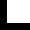

3
–
6
December
Beursschouwburg,
Brussel
3
–
6
December
Beursschouwburg,
Brussel


GEPRODUCEERD, GESPEELD, GEREGISSEERD, GEPRESENTEERD DOOR JONGE KUNSTENAARS VOOR IEDEREEN
Bâtard is een festival…het is een presentatieplatform…een discussieplatform…het is een uitwisselingsplatform…het is een organisatie van en door vrijwilligers…het is een gesubsidieerd project…het is een samenwerking…het is een initiatief dat plaats vindt te Brussel…het is voor velen een begin…of een einde…
De voorbije 10 edities ondersteunden we jonge opkomende kunstenaars. We boden hen een platform aan om hun werk te tonen in en rond de Beursschouwburg te Brussel. We proberen naast het presenteren van artistiek werk ook een uitwisselingsplatform te creëren. We willen de dialoog tussen kunstenaars onderling en kunstenaars en publiek stimuleren en faciliteren.
Bâtard experimenteert en is een experiment.


Bâtard is een festival. De voorbij 10 edities ondersteunden we jonge, opkomende kunstenaars. We boden hen de kans hun werk te tonen in een professionele context. Het festival vindt plaats in en rond de Beursschouwburg te Brussel. We hebben altijd een speciale focus gehad op de idee en realiteit van coöperatie.
Sinds 2004 is het festival door verschillende coördinators georganiseerd in verschillende vormen. De intentie is echter altijd dezelfde gebleven: het ondersteunen van jonge kunstenaars. Doorheen de jaren werd het concept van het festival meermaals bevraagd. Er is één hoofdvraag: Wat hebben jonge kunstenaars nodig?
De zoektocht naar mogelijke antwoorden leidde er toe dat het festival meer en meer door de kunstenaars zelf wordt georganiseerd.
Nadat Dries Douibi (co-artistiek coördinator van het huidige team) als jonge kunstenaars in 2011 op het festival stond schreef hij een brief met enkele bezorgdheden aan de toenmalige coördinator. Dries schreef dat het festival en zijn identiteit meer dan alleen ‘het presenteren van jonge kunstenaars’ moest zijn. Ook schreef hij dat hij hoopte voor een groter engagement van de kunstenaars zelf in de omgang met hun eigen context en presentatie. Na deze brief werd Dries de nieuwe artistiek coördinator.
Tijdens Bâtard 2012 werden verschillende alternatieve kunstpraktijken van jonge kunstenaars gepresenteerd. Er werd een ‘open call’ gelanceerd met de vraag voor praktijken rond zelforganisatie en de ontwikkeling ervan in een locale context. Er werd een ‘werkweek’ georganiseerd met de geselecteerde kunstenaars om als collectief na te denken over het algemene kader van het festival. Hierbij moesten ze hun individuele ervaringen in verhouding plaatsen tot de andere kunstenaars. Reeds snel werden we bewust van de moeilijkheidgraad van deze opdracht. Het zou resulteren in een moeilijk beslissingsproces en leiden tot een erg chaotisch festival. Organisch verdeelden de kunstenaars zich daarom over drie verschillende festivaldagen.
De eerste dag werd er naar het Europese district gewandeld waar de kunstenaars een avond organiseerden op het Schumann plein. De tweede dag bestond uit locatievoorstellingen op verschillende plekken in de Brusselse binnenstad. De derde dag concentreerde het artistieke werk zich in de Beursschouwburg.
Na deze editie toonden de kunstenaars Pamina de Coulon en Michiel Vandevelde (beide namen deel als kunstenaar aan de editie van 2012) interesse om deel te worden van het Bâtard team. Dries Douibi nodigden hen daarop uit om samen met hem de artistieke lijn uit te tekenen voor de volgende edities en zo de idee van coöperatie ook in een concrete praktijk om te zetten.
In de poging om een festival louter door kunstenaars te laten organiseren was Bâtard tot hier toe nog niet geslaagd. Daarom besloot het nieuwe, uitgebreide team om op verschillende vormen van ‘samenwerking’ te focussen. De editie van 2013 draaide om het vinden van een balans tussen individuele verlangens en gemeenschappelijke doelen. Hiervoor selecteerde we 8 jonge kunstenaars en vroegen hen om samen met het artistieke team de uitdaging aan te gaan om een festival te organiseren. De kernvraag luidde: Hoe onze gemeenschappelijk bezorgdheid te activeren?
Deze vraag ontstond nadat we eerder in het proces een ‘kaart van bezorgdheden’ hadden opgesteld. Deze kaart was het resultaat van een rondvraag bij een honderdtal kunstenaars. We vroegen hen naar hun bezorgdheden en filterden uit hun antwoorden een kaart waarop deze gesynthetiseerd werden.
Op basis van deze kaart besloot het artistieke team dat hun interesse vooral uitging naar wat een mogelijk gedeelde bezorgdheid kon zijn bij de geselecteerde kunstenaars en hoe daarmee om kon worden gegaan.
Na verschillende richtingen te onderzoeken besloten de geselecteerde kunstenaars om de Beursschouwburg zelf als gemeenschappelijke bezorgdheid te nemen. De architectuur van dit gebouw is gebaseerd op begrippen zoals transparantie en openheid. Deze noties wilden de kunstenaars bevragen en ze maakten een avond waarop de toeschouwers hier ook over zouden reflecteren. Samen maakten de kunstenaars ook een publicatie die het hele proces van hun samenwerking bloot legde.
Tegelijkertijd en als gevolg van de ‘kaart van bezorgdheden’ ontwikkelde het artistieke team ook een congres in nauwe samenwerking met twee Brusselse kunstscholen en een onderzoeksplatform: P.A.R.T.S., RITS en a.pass. De idee ontstond om in nauwe samenwerking met enkele studenten van deze scholen een experimenteel congres te organiseren. Tijdens de dagen van het festival, overdag, vond dit congres plaats. Er werd elke dag een debat tussen enkele uitgenodigde sprekers georganiseerd en een reeks denktafels gemodereerd door de studenten zelf.
Voor de komende editie (december 2014) onderzoekt het artistieke team opnieuw de mogelijkheden van coöperatie. Deze keer zal het team een concept en programma voorstellen aan een groep geselecteerde kunstenaars. Samen met de kunstenaars en uitgenodigde gasten willen we dit plan bespreken. Daarnaast willen we ook een bredere discussie tussen de kunstenaars faciliteren. We organiseren daarom een weekend waarbij we gebruik zullen maken van de ‘Open Space technology’. Hierbij vertrekken we van de vraag: “Waarom zijn we niet bozer dan we zijn?”. Deze vraag moet een levendige discussie veroorzaken, een uitwisseling van ideeën en gedachten. Zodoende willen we de praktijk van coöperatie op een andere manier (dan de voorgaande edities) realiseren.
Sinds 2012 bestaat de artistieke kern van Bâtard uit drie mensen. Hiermee willen we de idee van samenwerking, zijn valkuilen en voordelen, in praktijk onderzoeken. Het artistieke team bestaat uit Pamina de Coulon, Dries Douibi en Michiel Vandevelde. Elk hebben zij een artistieke achtergrond en studeerden ze verschillende disciplines (respectievelijk: performance kunst, beeldende kunst en dans). Bâtard wordt dus voornamelijk georganiseerd door (jonge) kunstenaars.
Pamina de Coulon is een Zwitserse auteur en performer. Ze ontwikkelde haar kunstpraktijk aan de ‘Haute Ecole d’Art et de Design’ te Geneve (2007-2010). Tijdens haar opleiding werd ze begeleid door Yan Duyvendak, Josep Maria Martin, Lina Saneh en Christophe Kihm. Voor ze aan deze opleiding begon studeerde ze nog beeldende kunst en speelde ze theater. Haar podiumwerk is geïnspireerd door autosuggestieve technieken, stand-up comedy en geassocieerd vrij praten (zoals gebruikt wordt in de psychoanalyse en radiokronieken). Ze verhuisde naar Brussel in 2011 waar ze een residentie kreeg aangeboden bij L’L (een organisatie die jong werk ondersteunt en kunstenaars ruimte aanbiedt). Daarnaast volgde ze een master aan de ULB in cultureel management. Ze toonde haar derde stuk: ´Si j´apprends a pêcher, je mangerai toute ma vie` op het Bâtard festival in 2012. Momenteel toert ze rond met de voorstelling ‘FIRE OF EMOTIONS’ gebaseerd op de sociale en politieke verlangens naar of fantasieën over de realiteit van tijdsreizen.
Dries Douibi stond drie jaar geleden zelf nog als jonge maker op het Bâtard festival met twee voorstellingen. Daarna heeft hij één jaar de artistieke coördinatie van Bâtard festival gedaan. Hij heeft multimediale vormgeving in KASK Gent gestudeerd en werkt momenteel een Master in de filosofie af aan de VUB. Zijn werk bestaat uit video’s, tentoonstellingen, voorstellingen, tekeningen, installaties, telkens met een grote betrokkenheid met de context en de eigen positie als jonge maker binnen die context. Daarnaast is hij bestuurslid en lid van het artistieke team van Croxhapox, een ruimte voor hedendaagse kunst in Gent en zit hij in de adviesraad voor het kunstenfestivaldesarts.
Michiel Vandevelde begon te dansen bij het jeugdtheater -en dansgezelschap fABULEUS. In 2012 studeerde hij af als danser/choreograaf aan P.A.R.T.S.. Zijn werk omvat acties in de publieke ruimte, voorstellingen maken en het bouwen van structuren. Hij werkte in het begin vaak samen met Menno Vandevelde en Jozef Wouters. In 2010 presenteerde hij de voorstelling “Creatie 2010 (musicpiece)” op Theater aan zee. Daarna ontwikkelde hij het project “Tentproject (a space for ideas)”. Een project gebaseerd op de zoektocht naar alternatieve politieke, economische en sociale structuren. Een zoektocht die ook de basis vormt voor zijn latere werk: “Stageproject (a space for ideas and action)” (2012), “Walking piece” (2012) en “Love Songs (veldeke)” (2013). Sinds een tweetal jaar werkt hij aan de oprichting van een nieuwe politieke partij, getiteld: ‘The political party’. Een werk dat hij ontwikkelt in het kader van de “Stadsresidenten” van kunstencentrum Vooruit te Gent. Op het Bâtard Festival 2012 organiseerde hij zijn eerste denktank ter voorbereiding van die politieke partij. Sinds 2013 is hij betrokken bij de artistieke organisatie van het Bâtard festival. Momenteel maakte hij deel uit van een collectieve residentie bij Les Bains Connective. Onder de titel “Pharmacon” zullen een vijftal kunstenaars apart en samen werken. Daarnaast bereidt hij een nieuwe voorstelling voor getiteld: “Antithesis, the future of the image” (maart 2015, Vooruit, Gent).
Chloë De Vos studeerde Theater- en Filmwetenschappen aan de Universiteit Antwerpen. Tijdens haar studies werkte ze mee aan projecten van het theatergezelschap van de UA, De Bromvlieg, deed ze een workshop met Berlin en liep ze stage bij Benjamin Verdonck en SPIN. Momenteel werkt ze als consulent bij het erkend sociaal bureau voor kunstenaars Ritmo Art in Antwerpen en verzorgt ze mee de communicatie bij SPIN.
Ward Heirwegh staat sinds de editie van 2011 in voor de vormgeving van het festival en herhaalt dat dit jaar met veel enthousiasme. In 2007 behaalde hij zijn diploma als meester in typografie aan de Sint Lucas Academie te Gent, België. Hij begon zijn carrière als junior Graphic designer bij de Brusselse ontwerp-studio Base Design. Na 2 jaar daar werkzaam te zijn achtte hij de tijd rijp en begon een zelfstandige studio als grafisch ontwerper en art director. Hij legt de focus vooral op klanten binnen de culturele sector en heeft een grote interesse in editoriaal ontwerpen. Tot dusver kon hij Annemie Verbeke, S.M.A.K. Bozar, Tim Van Laere, Batard Festival, Stijn Ank, Stella Lohaus,… tot zijn klanten rekenen.
Naast zijn studio richtte Ward ook een experimenteel publicatie platform op: Sleeperhold Publications. Sleeperhold Publications is een op onderzoek gebaseerd platform dat de focust legt op kunstenaarspublicaties en functioneert als een excuus om te experimenteren met de creatie van inhoud, verschillende media, manieren van verspreiding,…
Hussein Atshan is een Iraakse filmmaker, fotograaf en theatertechnieker. In Bagdad behaalde hij eerst een bachelordiploma in elektriciteit, waarna hij in filmen zijn passie vond. Hij volgde workshops in Jordanië en in Irak, en creëerde documentaires en films, zowel alleen als in team. Zijn eigen kortfilm “The one who saw everything” was te zien op verschillende filmfestivals in Europa en het Midden-‐Oosten. Na de oorlog van 2003, die de creativiteit in Bagdad in de kiem smoorde, besloot Hussein een nieuw leven te beginnen in België, waar hij nu zeven jaar woont. Hij werkte voor CCHA en volgde een bijkomende opleiding theatertechniek. In Brussel schoolde hij zich ook bij in de fotografie. Zijn fototentoonstelling Hellmet, met foto’s van helmen uit de Eerste en Tweede Wereldoorlog, is momenteel te zien in het Kaaitheater. Ook werkte hij als all-‐ round theatertechnieker voor onder andere Nuit Blanche, Mestizo Festival, Kunstenfestivaldesarts en de Zomer van Antwerpen. Hij maakte al deel uit van het technisch team van Bâtard in 2012 en maakt dit jaar een comeback als technisch verantwoordelijke.
Ondersteuning communicatie en coördinatie vrijwilligersLien Annicaert is actief op verschillende fronten in de culturele sector. Ze studeerde theaterwetenschappen aan de universiteit van Gent. Daarnaast behaald ze een bachelor als regisseur en drama docent aan de Toneelacademie van Maastricht. Haar artistieke werk wordt gekenmerkt door de fascinatie met structuren en patronen waarin mensen hun leven proberen te vatten. “Living” werd geselecteerd voor het Pertangfestival van Scheld’apen in 2012. In 2013 presenteerde ze “Terrarium” op het Jong Wilt festival in de Werf (Brugge). Lien werkt achter de schermen bij onder andere het Kaaitheater, Corpus Ca. en Theater aan Zee. Ze was betrokken bij Bâtard van 2009 tot 2012 en is blij om terug te zijn!
Ondersteuning productieSelm Wenselaers (1983) studeerde Geschiedenis in Antwerpen en Berlijn en is (erfgoed)dramaturg en performer. De nauwe samenwerking met theatermaakster Suzanne Grotenhuis resulteerde in de voorstelling ‘Zwarte Woud forever’, die in 2013 geselecteerd werd voor Circuit X en bekroond is met de Roel Verniersprijs. Bij de voorstelling ‘Ceçi n’est pas’ van Dries Verhoeven, die momenteel in heel Europa speelt, is Selm als performer betrokken. Met danseres en choreografe Amy Bell wordt op dit moment aan een nieuwe voorstelling gewerkt, die in 2015 in première zal gaan.
Algemene OndersteuningHannes Dereere (°1990) studeerde theaterwetenschappen aan de Universiteit van Gent en schreef na zijn opleiding als theaterrecensent voor verschillende festivals en media. Hij werkte als festivaldramaturg mee aan het Bâtard festival in 2012. Zijn samenwerking met theatermaakster Silke Huysmans leverde tot nog toe drie voorstellingen op: 'Enkele Steden' (theatrale lezing op locatie, 2013), 'Gewij' (kindervoorstelling in productie van Artforum Leuven, 2014) en 'Raamwerk' (onderzoeksproject bij KC De Werf Brugge, 2014). Daarnaast werkte Hannes als dramaturg mee aan de voorstelling ‘FIRE OF EMOTIONS’ van Pamina de Coulon (L'L Brussel, 2014) en maakte hij muziek voor de experimentele film 'Brieven aan Crayon' (2014) in samenwerking met fotograaf Tom Callemin en schrijver Sibran Sampers.
PRODUCED, PERFORMED, DIRECTED, CREATED, PRESENTED BY YOUNG ARTISTS FOR EVERYONE.
Bâtard is a festival…it's a presentation platform…it's a discussion platform…it's an exchange platform…it's a volunteer-run organization…it's a subsidized project…it's a cooperation…it's a Brussels-based initiative…it's a beginning…or an ending…
In the past 10 editions we supported emerging artists by offering them a platform to show their work in and around the Beursschouwburg Brussels. Bâtard isn’t only about presenting artistic work, but it also tried to be a platform for exchange between the selected artists. More and more, Bâtard wants to broaden this platform for exchange and make it more public.
Bâtard experiments.
Introduction to stretching the moment.
The curatorial angle of Bâtard festival 2014.
In order to define our curatorial stance for this edition of the Bâtard festival, we – young artist-curators – saw a lot of artworks. We also read all kinds of texts: about the role of artists, about the role of curators, about art, the world, science, love and anger. We then proceeded to decide on which artists to select for this edition of the Bâtard festival. We made a choice for artists whose works kept coming up in our discussions, kept being brought up as examples for our ideas, and had somehow become walls for our curatorial practice to lean on. There is no denying these were thought provoking works for us.
Prior to everything else the Bâtard festival aims at supporting young artists, and we strongly believe that it is especially important for us emerging artists to work with the tools of collective organization, to discover and directly embed some of these cooperation skills in our artistic practices. As a result of this belief in cooperation, we experiment with collective practices all along the way towards the festival itself. This year we invited the artists we had selected and some guests to an Open Space Technology, a specific format for collective discussion. We concretely spent three days together, discussing topics that mattered to us, comparing ideas and understanding other perspectives. It took us some time to understand, but we figured out it was at this very moment that the curatorial shift happened for us.
It appeared to us that it is not so much the thoughts that seem to be lacking. It is time, space and care to develop attention for these thoughts. It is time, space and care for impressions and information to form into thoughts. It is time, space and care to share these thoughts. We somehow pressure ourselves to have opinions ready before we have thoughts, because it all goes so fast, because one doesn’t want to be left behind, because we have to be competitive, because it is how it’s done, because only the fittest survive… Subsequently, this is how we came to our standpoint.
We call for STRETCHING THE MOMENT as much as one might find suitable. We call for considering the instant, inhabiting it, investing it. Therefore not only is our selection only composed of thought provoking works by young artists who reclaim time, require attention, and in a firm yet generous manner really occupy this moment. But we will also present these works embedded in a specifically framed context to both confirm and support them; a context filled with what came before, but also what can come after them. A curated time and space that allows for both the sedimentation and the circulation of our new and old thoughts: a stretch of the moment.
Of course, in the timeframe of a festival only so much stretching can happen... But here again, it is the thought that counts! It counts more than ever, specifically at times of strong austerity measures, of cuts and recuts, of threats and social vulnerability when this occupying time and space is often wrongly considered a superfluous luxury. We simply oppose this misleading statement by instead considering it a duty. A duty, or at least a strong stance, for it is an occupation; it is the decision to not let it all pass by without affecting us. The decision to engage in open, thoughtful, serious yet joyous consideration, sharing, testing and thinking. To embody the social relations and cultural experiences that are our goals. It might still have something to do with luxury, but it’s only because stretching the moment means enjoying the whole richness between one thing and the other. Enjoying the transition.
This is what we mean by stretching the moment. We strongly hope you’ll come do it with us during these 4 evenings. Together we are stronger.
Bâtard is a festival. During the past 10 editions we have been supporting artists by offering them a chance to show their work in and around the Beursschouwburg in Brussels. From the beginning we decided to focus on the idea (and reality) of cooperation.
Since 2004 Bâtard has been organized in different shapes and sizes by different coordinators, though the intention was always the same: to organize a festival for young artists. Throughout the years the concept of a festival has been questioned regularly, with one core question: What do young artists need?
This quest has lead to the development of Bâtard by the artists themselves :
After performing in the 2011 edition, Dries Douibi wrote a letter to the artistic coordinator with his thoughts about the festival. He considered that the identity of the festival had to be more than a mere "festival for young artists". He had hoped for a greater commitment by the artists themselves. To arrive to a “festival by young artists” as well. After this letter, he became the next artistic coordinator.
In Bâtard 2012 we brought alternative art practices by young artists into the spotlight. We put out an open call about self-organization and development in the local context. We organized a workweek in the Beurschouwburg with the selected artists to collectively create a frame for the festival, combining each one’s own individual experiences. But we realized that these combinations would not result in easy decision making and would lead to a very diverse festival. The artists organically divided themselves into 3 distinctive festival days.
The first day we marched to the European district where the artists organized an evening on the Schumann Square. The second day consisted of location performances alongside a carefully thought-out “parcours”. During the third day the artists concentrated on the Beurschouwburg.
Afterwards, Pamina de Coulon and Michiel Vandevelde, both artists in the 2012 edition, showed interest in sticking around at Bâtard. Dries Douibi invited them into the team resulting in a shared artistic and general coordination by himself, Pamina de Coulon, Michiel Vandevelde and Ingrid Vranken (financial director 2012). In the effort to organize a festival by cooperating with the artists, Bâtard has never quite succeeded. Therefore we decided to focus on the different forms of cooperation. The 2013 edition was about finding a balance between individual desires and common goals, formatting different group dynamics, challenging young artists in their cooperative skills. It happened in two ways, one was the bringing together of a group of 8 emerging artists who worked together for one month around the question of «How to (re)activate our common concern? ».
This question emerged after the conceptualization of a “map of concerns” based on the answers the Bâtard team got from circa 200 people to their open call for question: « What are your concerns? ». From this map the artists and the team realized that their interest lied more in what actually constitutes a common concern and how to deal with it.
After several investigations the artists decided to take the building where the festival was supposed to happen, the famous Beursschouwburg in Brussels, as their common concerns, and developed a concept for the festival that would enlighten the audience about this concern as well as show their individual works. This happened in the evenings of the festival and the how of their collaboration is collected in the publication they made together.
At the same time and still starting from this 'Map of concerns', Bâtard teamed up for a monthlong workshop with two art schools and a residency program in Brussels, P.A.R.T.S, RITS and a.pass, to organize together with some of their students an kind of experimental congress that took place during the day, and that through debates, talks, workshops and experiments explored in various ways this same broad question of common concerns and collaboration.
For 2014, the team researched again the question of cooperation, pondered the past editions and scanned the actual cultural sector and will this time propose a first concept for the festival to the artists and then discuss it with them, and exterior guest, while at the meantime continuing its investigations about collective practice, and especially collective thinking and sharing of opinions in new settings and proposals, organizing first of all an 'Open Space technology', broadly addressing the question « Why aren't we angrier then we are ? » as setting stone of its thoughts about cooperation.
After this collective experience and working more closely with the selected artists the team decided upon “Stretching the moment” both as a slogan and a curatorial angle for the festival. An occupation of time, a precondition for impact.
Since the end of 2012, Bâtard is being co-curated by several persons, as a way of putting the cooperative concept into practice ourselves. The curatorial team consists of Pamina de Coulon, Michiel Vandevelde and Dries Douibi, who each studied different artistic disciplines (Performance art / Visual art / Dance) and now have some years of experience in the artistic field. Thus Bâtard is primarily organized by (young) artists.
Pamina de Coulon is a Swiss author and performer. She developed her practice at the Haute Ecole d'Art et de Design in Geneva (2007-2010) guided by Yan Duyvendak, Josep Maria Martin, Lina Saneh, Christophe Kihm. This was after having studied visual arts and practiced theater. Her stage work is inspired by autosuggestion techniques, stand-up comedy and associated free speech as practiced in psychoanalysis and radio chronicles. She moved to Brussels in 2011 where she first started her on-going residency at L´L (a space for accompagnying research in young creation) and enrolled at ULB for a master in cultural management. She showed her third piece ´Si j´apprends a pêcher, je mangerai toute ma vie` at Bâtard 2012 and is now touring with her next project 'FIRE OF EMOTIONS' centered around the social and political, desired or fantasized realities of time travel.
Dries Douibi performed as an artist at Batard 2011 and he afterwards became the artistic coordinator of the festival. He studied Philosophy at the VUB and currently pursues his Master's degree in multimedia design at Kask Gent. His work consists of videos, exhibitions, performances, drawings, installations, with a focus on involvement and the position of young artists inside a given context. He is a board member and member of the artistic team in Croxhapox, a space for contemporary art in Gent, and a member of the advisory board in Kunstenfestivaldesarts.
Michiel Vandevelde started dancing at the youth theatre and dance company fABULEUS. He finished his degree in dance/choreography at P.A.R.T.S. in 2012. His work consists of actions in the public space, performance and building structures. In his early work he often cooperated with Menno Vandevelde and Jozef Wouters. In 2010 he showed ´Creatie 2010 (musicpiece) ´ at Theater Aan Zee. Afterwards he developed Tentproject (a space for ideas), a project based on the quest for alternative political, economic and social structures. This quest would form the base for his later work: ´Stageproject (a space for ideas and action)` (2012), `Walking piece` (2012) and `Love songs (veldeke)`(2013). He is currently working on founding a new political party named 'The political party', developed within the frame of `De stadsresidenten` of the art centre Vooruit in Gent. During the Bâtard Festival 2012, he organized his first think tank as a preparation for this party.
For the whole organization of the festival, the curatorial team is accompanied by a support team of young professionals.
Finances & Admin'Chloë De Vos studied Theatre and Film Sciences at the University of Antwerp. During her studies she’s worked with the theatre company of the university De Bromvlieg, Berlin, Benjamin Verdonck and SPIN. At the moment she’s working as a consultant at the social bureau for artists Ritmo Art in Antwerp and helps SPIN out with their communication.
Design & WebWard Heirwegh has been in charge of the design of the festival since 2011. He studied Multimedia en Communicatie Technologieen at the PIH in Kortrijk, after which he got his Master's degree as a Graphic Designer at Sint-Lucas Gent. He has worked for Basedesign Brussel and currently works as a freelance designer. In 2009 he founded Sleeperhold Publications, a temporary publication platform.
TechnicsHussein Atshan is an Iraqi filmmaker, photographer and theater technician. In Baghdad, he first earned a bachelor’s degree in electricity, after which he found his passion in filmmaking. He attended workshops in Jordan and Iraq, and created documentaries and films, both by himself and in a team. His short film “The one who saw everything” was shown at several film festivals in Europe and the Middle East. With the creative scene thwarted in Baghdad after the 2003 war, Hussein decided to start a new life in Belgium, where he has now been living for seven years. He worked for CCHA and took additional training in stagecraft. In Brussels, he also took a course to develop his photography skills. His photo exhibition Hellmet, with pictures of helmets from the First and Second World War, is currently on display at the Kaaitheater. He also worked as an all-‐round theater technician for Nuit Blanche, Mestizo Festival, Kunstenfestivaldesarts and the Summer of Antwerp, among others. He was part of the technical team of Bâtard in 2012 and makes his comeback this year, taking on the responsibility for the technical side of the festival.
Support communication & volunteers coordinatorLIEN ANNICAERT is active on several fronts in the cultural sector. She studied theatre sciences at the University of Ghent and obtained her bachelor as a director / drama teacher at the Toneelacademie in Maastricht. Her own work is characterized by a fascination with the structures and patterns in which people try to capture their lives. LIVING was selected for the Pertangfestival in Scheld'apen in 2012 and in 2013 she presented TERRARIUM at Jong Wilt in De Werf. In addition, Lien also works behind the scenes at for eg Kaaitheater, Corpus Ca. and Theater Aan Zee. She was involved in Bâtard from 2009 'til 2012 and is happy to be back!
Support productionSelm Wenselaers (1983) studied History in Antwerp and Berlin and is a (heritage) dramaturg and performer. The close collaboration with theatre maker Suzanne Grotenhuis resulted in the play ‘Zwarte Woud forever’, which was selected for Circuit X and awarded with the Roel Verniers Price for promising debutants in 2013. Selm also performs in the installation ‘Ceci n’est pas’ by Dries Verhoeven, touring through Europe now. With dancer and choreographer Amy Bell, Selm is working on a new piece, that will premiere in 2015.
Soutien global et indéfectibleHannes Dereere (1990) est diplômé d’un Master en arts de l’Université de Gand (2012), spécialité « études théâtrales ». Son mémoire de fin d’études (nominé pour le prestigieux prix anv theaterscriptiesprijs) traite de la très débattue notion d’«engagement » (tant politique ou social que personnel) dans le travail des jeunes créateurs d’arts vivants. En 2013, il réalise Spectrum, un guide pour les spectateurs du Bâtard Festival à Bruxelles, et publie de nombreux articles, tout en poursuivant son activité de critique d’arts vivants. Parallèlement, il travaille sur trois projets théâtraux avec l’artiste Silke Huysmans : « Enkele Steden (2013)», « Gewij (2014) » et « Raamwerk (2014)» et est parfois conseiller dramaturgiques pour le projet « FIRE OF EMOTIONS » de Pamina de Coulon (2014-2015). En 2014, Il a également composé la musique de « Brieven Aan Crayon » un photo-film expérimental, réalisé en collaboration avec le photographe Tom Callemin et l’auteur Sibran Sampers.
PROPOSÉ, PERFORMÉ, CONÇU, CRÉÉ ET PRESENTÉ PAR DES JEUNES ARTISTES POUR TOUT LE MONDE.
Bâtard est un festival... une plateforme de présentation... une plateforme de discussion... une plateforme d'échange... une organisation de bénévoles... un projet subsidié... une coopération.. une initiative bruxelloise...c'est un début.. ou une fin en soi.
Cela fait déjà 10 ans que nous soutenons de artistes émergents en mettant à leur disposition une plateforme pour montrer leur travail au Beursschouwburg de Bruxelles et dans ses environs. Bâtard ne s'est pas contenté de présenter les travaux artistiques, mais a aussi essayé de stimuler l'échange entre les artistes eux-mêmes. De plus en plus, Bâtard cherche à élargir cette qualité de plateforme d'échange et à la rendre plus publique.
Bâtard expérimente.
Une introduction a stretching the moment,
le parti pris curatorial du Bâtard festival 2014.
Afin de définir notre approche curatoriale de cette édition du festival, nous avons assisté à de nombreuses expositions, pièces et performances en tous genres. Parallèlement avons également lu et discuté de nombreux textes, traitant du rôle des artistes, du rôle des programmateurs, de l’invention des curateurs, de l’art en général, du monde, de la science, de l’amour, de la colère... Lorsqu'est venue l’heure de procéder à la sélection des artistes que nous souhaitions présenter, nous avons choisi celles et ceux dont le travail revenait continuellement dans nos discussions ; ils revenaient comme exemples pour nos idées et sont devenus en quelque sorte les murs porteurs de notre pratique curatoriale. Autrement dit, ils étaient pour nous comme des générateurs de pensée!
Le Bâtard festival existe avant toute chose pour soutenir la jeune création, et nous croyons fermement qu’il est particulièrement important pour nous, artistes émergents, d’apprendre à travailler avec les outils de l’organisation collective afin d’inscrire la coopération de manière durable et organique dans nos pratiques.
Forts de cette confiance en la collaboration, nous implémentons diverses sortes de pratiques collectives tout au long du processus qui mène au festival à proprement parler. Ainsi cette année nous avons par exemple invité les artistes de notre sélection ainsi que d’autres camarades à un Forum Ouvert, un espace incitant à la discussion collective. Concrètement, nous avons passé trois jours ensemble à discuter de sujets qui nous importaient, à comparer des idées et comprendre des positions.
Rétrospectivement, c’est à ce moment-là que notre position curatoriale s’est définitivement imposée à nous.
Il nous est apparu que ce ne sont pas tant les pensées qui semblent manquer, mais bien le temps, l’espace et le soin nécessaires à une réelle attention pour ces pensées et idées.
Le temps, l’espace et le soin nécessaires aux impressions et informations pour qu’elles puissent se développer en pensées.
Le temps, l’espace et le soin nécessaires au partage de ces pensées ; il semblerait que nous nous efforcions à avoir une opinion prête avant même d’avoir commencé à y penser, parce que tout va si vite, parce que l’on ne veut surtout pas être à la traîne, parce qu’il faut être compétitifs, parce que c’est comme ça, parce que ne survivra que le mieux adapté ...
C’est donc sur ce constat de manque que s’appuie notre position :
nous appelons à étirer le moment (Stretching the moment) autant que l’on le souhaite ! Nous appelons à considérer l’instant, à l’habiter, à l’investir.
C’est pourquoi d'une part, nous avons sélectionné ces travaux générateurs de pensée créés par des artistes qui réclament le temps, requièrent notre attention, mais aussi, d’une manière à la fois ferme et généreuse, qui occupent réellement le moment. D'autre part, nous souhaitons les présenter dans un contexte spécifique permettant à la fois de les confirmer et de les soutenir ; un contexte incluant ce qui a pu venir avant eux mais aussi de ce qui pourrait venir après.
Un espace-temps organisé, qui permet la sédimentation comme la circulation de nos pensées nouvelles ou plus anciennes, comme un étirement du temps.
Bien entendu, durant le temps d’un simple festival la place pour l’étirement reste toute relative.. Mais justement, ici encore, c’est l’idée qui importe! En ces temps de mesures d'austérité sévères, de coupes et de recoupes, il nous semble plus que jamais nécessaire d'occuper le temps et l'espace et ne pas les considérer injustement comme un luxe superflu pour privilégiés. Nous souhaitons humblement nous opposer à cette croyance trompeuse en considérant plutôt l’investissement du moment comme un devoir. Un devoir, ou en tout cas une position très ferme, car il s’agit bien d’une occupation:c’est la décision de pas tout laisser passer sans que rien ne nous affecte. La décision de s’engager dans des réflexions, des considérations et des expériences ouvertes, sérieuses mais joyeuses et vivantes. D’incarner, aujourd'hui déjà, les relations sociales et les expériences culturelles que nous désirons pour demain.
Si cela a un lien avec un certain luxe, c’est seulement parce qu’étirer le moment signifie profiter de toute la richesse présente entre une chose et une autre. Savourer la transition en quelque sorte.
Voilà ce que nous entendons par stretching the moment, et nous espérons sincèrement que vous pourrez venir le faire avec nous lors des quatre soirées de notre festival.
Ensemble nous sommes non seulement plus fort.e.s mais aussi plus intéressant.e.s.
Bâtard est un festival. Depuis plus de 10 éditions nous nous attelons à soutenir les artistes émergents en leur offrant la possibilité de présenter leur travail au Beursschouwburg à Bruxelles, et dans ses alentours. Dès le départ nous avons décidé de nous concentrer également sur l'idée (et la réalité) de la coopération.
Depuis 2004, Bâtard a pris diverses formes et tailles et a été organisé par différents coordinateurs, mais l'intention est toujours restée la même : organiser un festival pour jeunes artistes. Au fil des ans le concept même de festival a été requestionné régulièrement, dans l'articulation d'une question principale : De quoi ont besoin les jeunes artistes et comment pouvons-nous les aider ?
C'est ces questions qui ont amené le développement actuel de Bâtard, à savoir son organisation par une équipe composée de jeunes artistes :
Après y avoir présenté son travail lors l'édition 2011, Dries Doubi a écrit une lettre au coordinateur artistique d'alors pour exprimer ses remarques et idées quant au festival. Il considérait que le festival devait aller au-delà d’un « festival pour jeunes artistes ». Il espérait un plus grand engagement des artistes eux-mêmes dans la construction de leur contexte de monstration. Un « festival par des jeunes artistes » en quelque sorte. C'est grâce à cette lettre qu'il est devenu le prochain coordinateur artistique.
Lors du Bâtard 2012, c'est des pratiques artistiques alternatives qui ont été mises en avant. Suite à un appel à projet centré sur l'auto-gestion et le développement de projets dans un contexte local, nous avons organisé une semaine de travail au Beursschouwburg avec les artistes sélectionnés, afin de concevoir de manière collective un cadre pour le festival, en combinant toutes les expériences individuelles. Nous avons alors réalisé que ces combinaisons entravaient passablement la prise de décision et auraient amené à un festival un peu trop disparate. C'est ainsi que les artistes se sont divisés en 3 jours spécifiques de festival.
Le premier jour nous avons organisé une marche/manifestation jusqu'au quartier Européen et son emblématique square Schumann duquel les artistes avaient pris possession et préparé diverses actions. Le deuxième jour été composé de performances spécifiques à certains lieux du centre-ville, agencées dans un parcours dûment réfléchi. Finalement, la troisième soirée s'est elle concentrée au Beursschouwburg.
Lors cette édition, Pamina de Coulon et Michiel Vandevelde, tous deux artistes de l'édition 2012, ont particulièrement montré leur intérêt pour la conception du festival, et c'est ainsi que Dries Douibi les a invité à le rejoindre au sommet, ce qui a donné une équipe de direction artistique et de coordination partagée, avec lui-même, de Coulon, Vandevelde et Ingrid Vranken (directrice financière 2012).
Cependant, jusqu'alors, Bâtard n'avait jamais complètement réussi dans sa quête d'organiser un festival en coopérant vraiment avec les artistes. C'est pourquoi, en 2013 nous avons décidé de nous concentrer sur différentes formes de coopération possibles. Cette édition a cherché le bon équilibre entre les désirs individuels et les buts communs en proposant différentes dynamiques de groupes et mettant en tension les qualités collaboratives de plusieurs jeunes artistes.
Ceci a eu lieu de deux manières distinctes. La première a été la création d'un groupe de 8 artistes et créateurs de différents horizons artistiques et culturels, qui ont travaillé ensemble un mois durant à partir de la question « Comment (re)activer nos préoccupations communes ? ».
Cette question avait émergé après la conceptualisation par l'équipe Bâtard d'une « Carte des préoccupations », basée sur les quelques 1'000 réponses reçues à leur appel « Quelles sont vos préoccupations ? ». C'est à la lumière de cette étrange cartographie très (peut-être trop) variée que l'équipe et le groupe d'artistes ont envisagé cette nouvelle question, qui renvoyait à qu'est-ce que qui constitue une préoccupation commune et comment s'en emparer.
La piste finale que le groupe a décidé de suivre a été de considérer le lieu d'accueil festival, le fameux Beursschouwburg, comme leur préoccupation commune. Ainsi, ils ont développé un concept pour le déroulement du festival qui expliciterait cette préoccupation tout en présentant également leurs travaux individuels. Ils ont rendu ce travail visible lors des soirées du festival et recueillis les modalités de leur collaboration dans une publication collective consultable sur place.
La deuxième partie du festival s'est également fondée sur la « carte des préoccupations ». L'équipe Bâtard s'est associée un mois durant à deux écoles d'arts bruxelloises, P.A.R.T.S et RITS, ainsi qu'au programme de résidence a.pass, pour organiser conjointement avec certains de leurs étudiants une sorte de congrès expérimental, qui avait lui lieu la journée. A travers des débats, conférences, ateliers et autres expériences diverses, ce moment de réflexion collective abordait également cette vaste question des préoccupations communes et de la collaboration.
Pour 2014, l'équipe a continué ses recherches sur la question de la coopération, s'est enrichie des éditions passées et a pondéré l'état actuel du secteur culturel et de la jeune création artistique. L'idée est de cette fois-ci proposer un premier concept du festival à la sélection d'artistes et ensuite en discuter avec eux, et des conseiller.è.s extérieurs afin de l'ajuster au mieux à leurs envies, besoins et aspirations. Tout en continuant à explorer le vaste panorama des pratiques collectives, particulièrement la réflexion collective, et le partage d'opinions dans de nouveaux formats et nouvelles techniques. Avec comme première étape l'organisation d'un « forum ouvert » réunissant la sélection, l'équipe et les conseillères, adressant la question générale « Pourquoi ne sommes-nous pas plus en colère que nous le sommes? ».
Depuis fin 2012, Bâtard est co-organisé et co-dirigé par plusieurs personnes, afin de nous-mêmes mettre en pratique les concepts de coopération et de travail collectif qui nous tiennent tant à coeur.
L'équipe curatoriale est composée de Pamina de Coulon, Michiel Vandevelde et Dries Douibi. A eux trois, ils cumulent des études dans différentes pratiques artistiques (Performance, Arts visuels, danse) et ont désormais quelques années d'expérience dans le champ artistique et le milieu culturel. Bâtard est donc principalement organisé par des (jeunes) artistes.
Pamina de Coulon est une performeuse et auteure suisse. Elle a développé sa pratique à la Haute Ecole d'Art et de Design de Genève (2007-2010) dans l'option Art Action ,sous l'enseignement de Yan Duyvendak, Josep maria Martin, Lina Saneh et Christophe Kihm. Elle avait déjà étudié les arts visuels et le théâtre auparavant. Son travail scénique est inspiré par les techniques d'autosuggestion, le stand up, les chroniques radiophoniques et la parole libre et associative comme elle s'est développée en psychanalyse. Il s'agit de longs monologues préparés mais pas écrits, qui sont donc transmis, racontés, mais pas joués ou récités. Depuis 2011 elle habite à Bruxelles, où elle y a entamé sa résidence à L'L (espace de recherche et d'accompagnement à la jeune création) simultanément à un master en gestion culturelle à l'ULB (2011-2014). Lors de Bâtard 2012 elle a présenté sa 3e pièce « Si j'apprends à pêcher, je mangerai toute ma vie » et c'est après cela qu'elle a été invitée par Douibi à le rejoindre à la direction artistique du festival. Depuis fin 2013, elle développé son nouveau projet « FIRE OF EMOTIONS », centré sur les réalités sociales et politiques, souhaitables ou fantasmées, du voyage dans le temps.
Dries Douibi a été invité en tant qu'artiste lors du Bâtard 2011. Depuis lors il est devenu le coordinateur artistique du festival. Il a étudié la philosophie à la VUB et poursuit actuellement un Master en design multimédia à KASK Gand. Son travail est composé de vidéos, expositions, performances, dessins et installations, avec une attention particulière portée sur la position des jeunes artistes dans un contexte donné. Il est membre de l'équipe artistique de Croxhapox, espace d'art contemporain à Gand, et fait aussi partie du comité de conseil du Kunstenfestivaldesarts à Bruxelles.
Michiel Vandevelde a commencé à danser chez fABULEUS, compagnie de théâtre et de danse pour jeunes basée à Louvain. En 2012, il a obtenu son diplôme en danse/chorégraphie à P.A.R.T.S, Bruxelles. Son travail se compose d'actions dans l'espace public, de performance et de construction de structures. Il a longtemps collaboré avec Menno Vandevelde et Jozef Wouters. En 2010, il a présenté « Creatie 2010 (musicpiece) » au festival Theater Aan Zee à Ostende. Il a ensuite développé le « Tentproject (a space for ideas) », un projet basé sur la quête de structures , tant politiques, sociales qu'économiques. Cette même quête a été à la base de ces projets suivants : « Stageproject (a space for ideas and action) » et « Walking piece » en 2012 puis « Love songs (veldeke) » en 2013. En ce moment il est occupé à la création d'un nouveau parti politique baptisé « The political party » développé dans le contexte de la résidence « De stadsresidenten » au Vooruit à Gand. Lors de Bâtard 2012, il a proposé un premier think tank en préparation de ce projet. C'est depuis qu'il fait partie du triumvirat de curateurs.
Pour toute l'organisation pratique du festival, l'équipe curatoriale est soutenue et accompagnée par une équipe de jeunes professionnels.
Ward Heirwegh est en charge du design du festival depuis 2011. Il a étudié multimédia et communication au PIH de Courtrai, puis obtenu son master en tant que graphiste à Saint-Luc à Gand. Il a ensuite travaillé pour Basedesign à Bruxelles et travaille actuellement comme designer indépendant. En 2009, il a également fondé Sleeperhold Publications, une plateforme de publication temporaire.
TechniqueHussein Atshan est un réalisateur, photographe et technicien de théâtre d'origine irakienne. A Bagdad il a tout d'abord obtenu un diplôme en électricité, après quoi il a découvert sa passion pour la réalisation. Il a participé à des ateliers en Jordanie et en Irak ainsi que créé des documentaires et films, tant individuellement que en équipe. Son court-métrage "The on who saw everything" a été projeté lors de nombreux festivals de film en Europe et au Moyen Orient. A l'effondrement de la scène créative à Bagdad suite à la guerre de 2003, Hussein a pris la décision de commencer une nouvelle vie en Belgique, où il réside désormais depuis 7 ans. Il a travaillé pour CCHA et a suivi des formations complémentaires en technique de la scène. A Bruxelles, il a également suivi des leçons afin de développer ses talents de photographe. Son exposition de photo Hellmet, composée de portraits de casques datant de la première et seconde guerre mondiale, a lieu de novembre 2014 à janvier 2015 au Kaaitheater. Il travaille également en tant que technicien pour, entre autres, Nuit Blanche, Mestizo Festival, Kunstenfestivaldesarts et Summer of Antwerp. Après avoir fait parti de l'équipe technique de Bâtard en 2012, il y fait son retour cette année en tant que coordinateur de la partie technique du festival.
Communication & coordination des bénévolesLien Annicaert est active sur plusieurs fronts du secteur culturel. Elle a étudié « sciences théâtrales » à l'Université de Gand et est diplômée en tant que metteuse en scène et professeure de théâtre de la Toneelacademie à Maastricht. Son travail se développe autours des structures et schémas dans lesquels les gens essayent de capturer leurs vies. Sa pièce LIVING a été sélectionné au Petrangfestival à Scheld'apen en 2012 et en 2013 c'est au Jong Wilt à De Werf qu'elle a présenté TERRARIUM. De plus, Lien travaille également de l'autre côté du miroir par exemple pour le Kaaitheater, la compagnie Corpus et le festival Theater Aan Zee. Elle a déjà fait partie de Bâtard de 2009 à 2012 et est heureuse d'être de retour !
Soutien ProductionSelm Wenselaers (1983) est dramaturge et performer et a étudié Histoire à Anvers ainsi qu’ à Berlin. De sa collaboration avec la metteuse en scène Suzanne Grotenhuis a resulté la pièce “Zwarte Woud forever” qui a été séléctionnée lors du festival Circuit X et a reçu le prix Roel Verniers pour “débutants prometteurs” en 2013. Selm performe également dans l’installation “Ceci n’est pas” de Dries Verhoeven en tournée actuellement à travers toute l’Europe. Enfin, Selm travail avec la danseuse et chorégraphe Amy Bell sur une nouvelle pièce pour 2015.
Global SupportHannes Dereere (°1990) graduated as a master in theatre studies at the University of Ghent and started writing as a theatre-critic for multiple festivals and media shortly after his education. He took on the position of festivaldramaturg in the Bâtard festival of 2012. His coöperation with theatre maker Silke Huysmans resulted in three productions so far: 'Enkele Steden' (theatrical lecture-performance on location, 2013), 'Gewij' (theatre for children made at Artforum Leuven, 2014) and 'Raamwerk' (researchproject at KC De Werf Bruges, 2014). Hannes worked as a dramaturg advisor with Pamina de Coulon for her production 'FIRE OF EMOTIONS' (L'L Brussels, 2014) and wrote the music for an experimental film called 'Brieven Aan Crayon' (2014) which he made together with photographer Tom Callemin and writer Sibran Sampers.